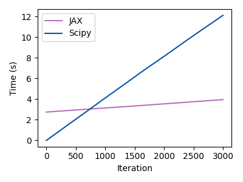

Note
Go to the end to download the full example code.
Compare JAX and Scipy#
This example compares the JAX and Scipy implementations of the interpolation backend.
import jax.numpy as jnp
import numpy as np
from time import time
import matplotlib.pyplot as plt
from astropy import units as u
from GridPolator import GridSpectra
First let’s get the spectra#
w1 = 5 * u.um
w2 = 12 * u.um
resolving_power = 100
teffs = [2800,2900,3000,3100,3200,3300]
impl_bin = 'rust'
g_jax = GridSpectra.from_vspec(
w1=w1,
w2=w2,
resolving_power=resolving_power,
teffs=teffs,
impl_bin=impl_bin,
impl_interp='jax',
fail_on_missing=False
)
g_scipy = GridSpectra.from_vspec(
w1=w1,
w2=w2,
resolving_power=resolving_power,
teffs=teffs,
impl_bin=impl_bin,
impl_interp='scipy',
fail_on_missing=False
)
Loading Spectra: 0%| | 0/6 [00:00<?, ?it/s]PHOENIX grid for 2800 not found. Downloading...
Downloading teff=2800: 0%| | 0.00/33.9M [00:00<?, ?B/s]
Downloading teff=2800: 0%| | 4.10k/33.9M [00:00<47:40, 11.8kB/s]
Downloading teff=2800: 0%| | 28.7k/33.9M [00:00<08:51, 63.7kB/s]
Downloading teff=2800: 0%| | 106k/33.9M [00:00<02:20, 240kB/s]
Downloading teff=2800: 1%| | 340k/33.9M [00:00<00:42, 788kB/s]
Downloading teff=2800: 3%|▎ | 885k/33.9M [00:00<00:19, 1.66MB/s]
Downloading teff=2800: 6%|▌ | 1.96M/33.9M [00:01<00:08, 3.80MB/s]
Downloading teff=2800: 13%|█▎ | 4.35M/33.9M [00:01<00:03, 8.87MB/s]
Downloading teff=2800: 23%|██▎ | 7.89M/33.9M [00:01<00:01, 15.9MB/s]
Downloading teff=2800: 34%|███▍ | 11.5M/33.9M [00:01<00:01, 21.3MB/s]
Downloading teff=2800: 43%|████▎ | 14.7M/33.9M [00:01<00:00, 24.4MB/s]
Downloading teff=2800: 54%|█████▎ | 18.1M/33.9M [00:01<00:00, 27.4MB/s]
Downloading teff=2800: 64%|██████▍ | 21.7M/33.9M [00:01<00:00, 29.7MB/s]
Downloading teff=2800: 75%|███████▌ | 25.5M/33.9M [00:01<00:00, 32.0MB/s]
Downloading teff=2800: 86%|████████▌ | 29.1M/33.9M [00:01<00:00, 33.3MB/s]
Downloading teff=2800: 98%|█████████▊| 33.1M/33.9M [00:02<00:00, 28.9MB/s]
Downloading teff=2800: 100%|██████████| 33.9M/33.9M [00:02<00:00, 16.9MB/s]
Loading Spectra: 17%|█▋ | 1/6 [00:02<00:14, 2.83s/it]PHOENIX grid for 2900 not found. Downloading...
Downloading teff=2900: 0%| | 0.00/33.8M [00:00<?, ?B/s]
Downloading teff=2900: 0%| | 4.10k/33.8M [00:00<59:13, 9.52kB/s]
Downloading teff=2900: 0%| | 45.1k/33.8M [00:00<05:28, 103kB/s]
Downloading teff=2900: 1%| | 197k/33.8M [00:00<01:24, 396kB/s]
Downloading teff=2900: 1%|▏ | 479k/33.8M [00:00<00:36, 925kB/s]
Downloading teff=2900: 4%|▎ | 1.25M/33.8M [00:00<00:12, 2.58MB/s]
Downloading teff=2900: 10%|█ | 3.52M/33.8M [00:01<00:03, 7.77MB/s]
Downloading teff=2900: 19%|█▉ | 6.37M/33.8M [00:01<00:02, 13.3MB/s]
Downloading teff=2900: 30%|██▉ | 10.0M/33.8M [00:01<00:01, 19.8MB/s]
Downloading teff=2900: 40%|███▉ | 13.5M/33.8M [00:01<00:00, 24.1MB/s]
Downloading teff=2900: 50%|█████ | 17.0M/33.8M [00:01<00:00, 27.3MB/s]
Downloading teff=2900: 59%|█████▉ | 19.9M/33.8M [00:02<00:01, 10.9MB/s]
Downloading teff=2900: 68%|██████▊ | 23.1M/33.8M [00:02<00:00, 13.8MB/s]
Downloading teff=2900: 80%|████████ | 27.1M/33.8M [00:02<00:00, 18.1MB/s]
Downloading teff=2900: 91%|█████████ | 30.7M/33.8M [00:02<00:00, 21.5MB/s]
Downloading teff=2900: 100%|██████████| 33.8M/33.8M [00:02<00:00, 13.7MB/s]
Loading Spectra: 33%|███▎ | 2/6 [00:05<00:11, 3.00s/it]
Loading Spectra: 50%|█████ | 3/6 [00:06<00:05, 1.76s/it]
Loading Spectra: 67%|██████▋ | 4/6 [00:06<00:02, 1.18s/it]
Loading Spectra: 83%|████████▎ | 5/6 [00:06<00:00, 1.16it/s]PHOENIX grid for 3300 not found. Downloading...
Downloading teff=3300: 0%| | 0.00/33.6M [00:00<?, ?B/s]
Downloading teff=3300: 0%| | 4.10k/33.6M [00:00<58:25, 9.57kB/s]
Downloading teff=3300: 0%| | 41.0k/33.6M [00:00<05:48, 96.0kB/s]
Downloading teff=3300: 1%| | 197k/33.6M [00:00<01:24, 397kB/s]
Downloading teff=3300: 1%|▏ | 475k/33.6M [00:00<00:35, 930kB/s]
Downloading teff=3300: 5%|▍ | 1.52M/33.6M [00:00<00:09, 3.26MB/s]
Downloading teff=3300: 11%|█ | 3.63M/33.6M [00:01<00:04, 6.71MB/s]
Downloading teff=3300: 23%|██▎ | 7.72M/33.6M [00:01<00:01, 14.3MB/s]
Downloading teff=3300: 34%|███▍ | 11.5M/33.6M [00:01<00:01, 20.2MB/s]
Downloading teff=3300: 47%|████▋ | 15.7M/33.6M [00:01<00:00, 25.9MB/s]
Downloading teff=3300: 59%|█████▊ | 19.7M/33.6M [00:01<00:00, 29.6MB/s]
Downloading teff=3300: 70%|███████ | 23.6M/33.6M [00:01<00:00, 32.3MB/s]
Downloading teff=3300: 82%|████████▏ | 27.6M/33.6M [00:01<00:00, 34.5MB/s]
Downloading teff=3300: 94%|█████████▍| 31.5M/33.6M [00:01<00:00, 31.3MB/s]
Downloading teff=3300: 100%|██████████| 33.6M/33.6M [00:01<00:00, 17.8MB/s]
Loading Spectra: 100%|██████████| 6/6 [00:09<00:00, 1.44s/it]
Loading Spectra: 100%|██████████| 6/6 [00:09<00:00, 1.56s/it]
Loading Spectra: 0%| | 0/6 [00:00<?, ?it/s]
Loading Spectra: 17%|█▋ | 1/6 [00:00<00:01, 3.39it/s]
Loading Spectra: 33%|███▎ | 2/6 [00:00<00:01, 3.42it/s]
Loading Spectra: 50%|█████ | 3/6 [00:00<00:00, 3.42it/s]
Loading Spectra: 67%|██████▋ | 4/6 [00:01<00:00, 3.43it/s]
Loading Spectra: 83%|████████▎ | 5/6 [00:01<00:00, 3.43it/s]
Loading Spectra: 100%|██████████| 6/6 [00:01<00:00, 3.43it/s]
Loading Spectra: 100%|██████████| 6/6 [00:01<00:00, 3.43it/s]
Evaluate a single spectrum#
wl_jnp = jnp.linspace(5.0, 11.2, 100)
wl_np = np.linspace(5.0, 11.2, 100)
params_jnp = (jnp.array([2900.]),)
params_np = (np.array([2900.]),)
start = time()
flux_jnp = g_jax.evaluate(params_jnp, wl_jnp)
end = time()
print(f'JAX took {end - start} seconds')
start = time()
flux_np = g_scipy.evaluate(params_np, wl_np)
end = time()
print(f'Scipy took {end - start} seconds')
JAX took 2.851752281188965 seconds
Scipy took 0.00475001335144043 seconds
Now do 1000 of each#
N = 1000
start = time()
for _ in range(N):
flux_jnp = g_jax.evaluate(params_jnp, wl_jnp)
end = time()
print(f'JAX took {end - start} seconds\n\tthat\'s {(end - start) / 1000} seconds per call')
start = time()
for _ in range(N):
flux_np = g_scipy.evaluate(params_np, wl_np)
end = time()
print (f'Scipy took {end - start} seconds\n\tthat\'s {(end - start) / 1000} seconds per call')
JAX took 0.39881229400634766 seconds
that's 0.00039881229400634766 seconds per call
Scipy took 4.160032510757446 seconds
that's 0.004160032510757446 seconds per call
QED#
The takeaway: The first JAX call is expensive, the rest are cheap. For Scipy everything costs the same. Of course, the costs change depending on the complexity of the grid.
fig, ax = plt.subplots(1,1,figsize=(4,3))
N=3000
g_jax = GridSpectra.from_vspec(
w1=w1,
w2=w2,
resolving_power=resolving_power,
teffs=teffs,
impl_bin=impl_bin,
impl_interp='jax',
fail_on_missing=False
)
g_scipy = GridSpectra.from_vspec(
w1=w1,
w2=w2,
resolving_power=resolving_power,
teffs=teffs,
impl_bin=impl_bin,
impl_interp='scipy',
fail_on_missing=False
)
dt_jax = np.zeros(N)
for i in range(N):
start = time()
flux_jnp = g_jax.evaluate(params_jnp, wl_jnp)
end = time()
dt_jax[i] = end - start
dt_scipy = np.zeros(N)
for i in range(N):
start = time()
flux_np = g_scipy.evaluate(params_np, wl_np)
end = time()
dt_scipy[i] = end - start
x = np.arange(N)
ax.plot(x, np.cumsum(dt_jax), label='JAX',c='#B96EBD')
ax.plot(x, np.cumsum(dt_scipy), label='Scipy',c='#0054A6')
ax.set_xlabel('Iteration')
ax.set_ylabel('Time (s)')
fig.tight_layout()
_=ax.legend()

Loading Spectra: 0%| | 0/6 [00:00<?, ?it/s]
Loading Spectra: 17%|█▋ | 1/6 [00:00<00:01, 3.40it/s]
Loading Spectra: 33%|███▎ | 2/6 [00:00<00:01, 3.42it/s]
Loading Spectra: 50%|█████ | 3/6 [00:00<00:00, 3.41it/s]
Loading Spectra: 67%|██████▋ | 4/6 [00:01<00:00, 3.42it/s]
Loading Spectra: 83%|████████▎ | 5/6 [00:01<00:00, 3.41it/s]
Loading Spectra: 100%|██████████| 6/6 [00:01<00:00, 3.41it/s]
Loading Spectra: 100%|██████████| 6/6 [00:01<00:00, 3.41it/s]
Loading Spectra: 0%| | 0/6 [00:00<?, ?it/s]
Loading Spectra: 17%|█▋ | 1/6 [00:00<00:01, 3.41it/s]
Loading Spectra: 33%|███▎ | 2/6 [00:00<00:01, 3.40it/s]
Loading Spectra: 50%|█████ | 3/6 [00:00<00:00, 3.41it/s]
Loading Spectra: 67%|██████▋ | 4/6 [00:01<00:00, 3.41it/s]
Loading Spectra: 83%|████████▎ | 5/6 [00:01<00:00, 3.40it/s]
Loading Spectra: 100%|██████████| 6/6 [00:01<00:00, 3.41it/s]
Loading Spectra: 100%|██████████| 6/6 [00:01<00:00, 3.41it/s]
Total running time of the script: (0 minutes 38.397 seconds)